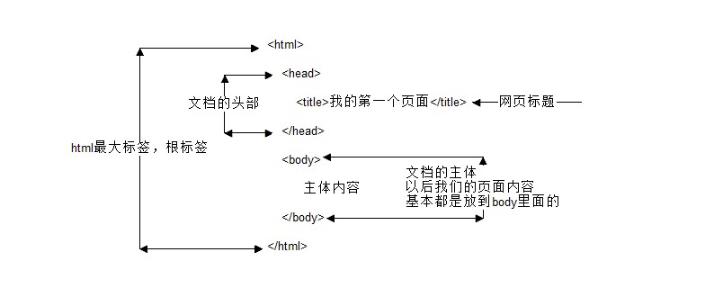
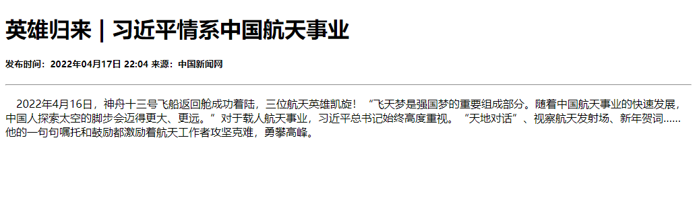
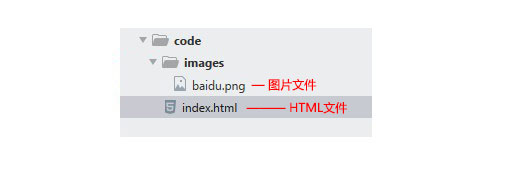

1.概述
超文本标记语言（英语：HyperText Markup Language，简称：HTML）是一种用于创建网页的标准标记语言。可以使用 HTML 来建立自己的 WEB 站点，HTML 运行在浏览器上，由浏览器来解析。
在本章中，博主主要采用的前端编辑器是Hbuilder X 3.3.13。
2.基础元素
在HTML中，基本骨架如下图所示

在HTML页面中，带有< >符号的元素被称为HTML标签，如上面提到的 <html>、<head>、<body>都是HTML骨架结构标签。
| 标签 | 说明 | 示例 |
|---|---|---|
| 常规元素（双标签） | <标签名> 内容 </标签名> | <body> 我是文字 </body> |
| 空元素（单标签） | <标签名 /> | <br /> |
| 标签关系 | 示例 |
|---|---|
| 嵌套关系 | <head> <br/> <title> </title> <br/></head> |
| 并列关系 | <head></head><br/><body></body> |
2.1 文档类型
1
<!DOCTYPE html>
<!DOCTYPE html> 声明位于文档中的最前面的位置，处于 <html> 标签之前。此标签可告知浏览器文档使用哪种 HTML 或 XHTML 规范。
<!DOCTYPE html> 就是告诉浏览器按照HTML5 规范解析页面。
规定： HTML文件必须加上 DOCTYPE 声明，并统一使用 HTML5 的文档声明
2.2 页面语言
1
2
3
4
5
6
7
8
9
10
11
<html lang="en"> 指定html 语言种类为英文
<html lang="zh-CN"> 指定html 语言种类为中文
<!--简单来说，可能对于程序来说没有太大的作用，但是它可以告诉浏览器，搜索引擎，一些处理Html的程序，对页面语言内容来做一些对应的处理或者事情
比如:
- 根据根据lang属性来设定不同语言的css样式，或者字体
- 告诉搜索引擎做精确的识别
- 让语法检查程序做语言识别
- 帮助翻译工具做识别
- 帮助网页阅读程序做识别
等等
-->
规定：考虑浏览器和操作系统的兼容性，目前仍然使用 zh-CN 属性值
2.3 字符集
1
2
3
4
5
<meta charset="UTF-8" />
<!--
字符集(Character set)是多个字符的集合。
计算机要准确的处理各种字符集文字，需要进行字符编码，以便计算机能够识别和存储各种文字。
-->
| 字符集 | 支持语言 | 说明 |
|---|---|---|
| gb2312 | 简单中文 | 包括6763个汉字 gb – 国标（GUO BIAO） |
| BIG5 | 繁体中文 | 港澳台等用 |
| GBK | 全部中文字符 | GBK是GB2312的扩展，加入对繁体字的支持，兼容GB2312 |
| UTF-8 | 全世界字符 | 包含全世界所有国家需要用到的字符 |
规定：一般情况下统一使用 UTF-8 编码, 请尽量统一写成标准的 UTF-8，不要写成 “utf-8” 或 “utf8” 或 “UTF8”。
3.常用标签
| 标签类型 | 说明 | 示例 |
|---|---|---|
标题标签h | head 头部,加了标题的文字会变的加粗，字号也会依次变大一行是只能放一个标题的 | <h1> 标题文本 </h1> |
段落标签p | paragraph段落 | <p> 文本内容 </p> |
水平线标签hr | horizontal 横线,在网页中显示默认样式的水平线 | <hr/>是单标签 |
换行标签br | break 打断 、换行， | <br />是单标签 |

| 标签类型 | 说明 | 示例 |
|---|---|---|
div | division 的缩写 分割， 分区;盒子元素，一行只能放一个 | <div> 这是头部 </div> |
span | span 跨度，跨距；范围；盒子元素，一行可以放多个 | <span>今日价格</span> |
| 文本格式标签 | 说明 | 示例 |
|---|---|---|
加粗标签b或者strong | b-bold 加粗，strong 强壮，粗壮 | <b>加粗文字</b><strong>加粗文字</strong> |
倾斜文字标签i或em | 文字斜体显示 | <i>倾斜文字</i><em>倾斜文字</em> |
删除线标签 s或del | 文字加删除线 | <s>加删除线的文字</s><del>加删除线的文字</del> |
下划线u或ins | 文字加下划线 | <u>加删除线的文字</u><ins>加删除线的文字</ins> |
4.标签属性
有些标签有属性加持，本节介绍有属性加持的标签。所谓属性就是外在特性 比如 手机的颜色 手机的尺寸 ，总结就是手机的属性。
- 手机的颜色是黑色
- 手机的尺寸是 8寸
- 水平线的长度是 200
- 图片的宽度 是 300
1
2
<标签名 属性1="属性值1" 属性2="属性值2" …> 内容 </标签名>
<手机 颜色="红色" 大小="5寸"> </手机>
4.1 图像标签
单词缩写： image 图像
要想在网页中显示图像就需要使用图像标签，接下来将详细介绍图像标签<img />以及和他相关的属性。（它是一个单标签）
语法如下：
1
<img src="图像URL" 属性1="属性值1" 属性2="属性值2" …/>
| 属性 | 属性值 | 描述 |
|---|---|---|
| src | URL | 图像的路径 |
| alt | 文本 | 图像不能显示时的替换文本 |
| title | 文本 | 鼠标悬停时显示的内容 |
| width | 像素 | 设置图像的宽度 |
| height | 像素 | 设置图像的高度 |
| border | 数字 | 设置图像边框的宽度（css中讲解） |
1
2
3
4
5
6
7
8
9
10
11
正常的<br />
<img src="cz.jpg" width="300" height="300" /><br />
带有边框的<br />
<img src="cz.jpg" width="300" height="300" border="3" /><br />
有提示文本的<br />
<img src="cz.jpg" width="300" height="300" border="3" title="这是个小蒲公英" /><br />
有替换文本的<br />
<img src="cz.jpg" width="300" height="300" border="3" alt="图片不存在" />
4.2 链接标签
单词缩写： anchor 的缩写 [ˈæŋkə(r)] 。基本解释 锚, 铁锚 。
在HTML中创建超链接非常简单，只需用标签把文字包括起来就好。
语法格式：
1
<a href="跳转目标" target="目标窗口的弹出方式">文本或图像</a>
| 属性 | 作用 |
|---|---|
| href | 用于指定链接目标的url地址，（必须属性）当为标签应用href属性时，它就具有了超链接的功能 |
| target | 用于指定链接页面的打开方式，其取值有_self和_blank两种，其中_self为默认值，__blank为在新窗口中打开方式。 |
注意：
- 外部链接 需要添加
http:// www.baidu.com - 内部链接 直接链接内部页面名称即可 比如
< a href="index.html"> 首页 </a > - 如果当时没有确定链接目标时，通常将链接标签的href属性值定义为“#”(即
href="#")，表示该链接暂时为一个空链接。 - 不仅可以创建文本超链接，在网页中各种网页元素，如图像、表格、音频、视频等都可以添加超链接。
4.3 注释标签
在HTML中还有一种特殊的标签——注释标签。如果需要在HTML文档中添加一些便于阅读和理解但又不需要显示在页面中的注释文字，就需要使用注释标签。
1
<!-- 注释语句 -->
一般用于简单的描述，如某些状态描述、属性描述等。注释内容前后各一个空格字符，注释位于要注释代码的上面，单独占一行
推荐：
1
2
<!-- Comment Text -->
<div>...</div>
5.路径
实际工作中，我们的文件不能随便乱放，否则用起来很难快速的找到他们，因此我们需要一个文件夹来管理他们。
页面中的图片会非常多， 通常我们再新建一个文件夹专门用于存放图像文件（images），这时再插入图像，就需要采用“路径”的方式来指定图像文件的位置。路径可以分为： 相对路径和绝对路径
5.1 相对路径
以引用文件之网页所在位置为参考基础，而建立出的目录路径。因此，当保存于不同目录的网页引用同一个文件时，所使用的路径将不相同，故称之为相对路径。
| 路径分类 | 符号 | 说明 |
|---|---|---|
| 同一级路径 | 只需输入图像文件的名称即可，如<img src=”baidu.gif” />。 | |
| 下一级路径 | “/” | 图像文件位于HTML文件同级文件夹下（例如文件夹名称为：images） 如 <img src="images/baidu.gif" />。  |
| 上一级路径 | “../” | 在文件名之前加入“../” ，如果是上两级，则需要使用 “../ ../”，以此类推， 如 <img src="../baidu.gif" />。  |
1
相对路径，是从代码所在的这个文件出发， 去寻找我们的目标文件的，而 我们所说的 上一级 下一级 同一级 简单说，就是 图片 位于 HTML 页面的位置
5.2 绝对路径
绝对路径以Web站点根目录为参考基础的目录路径。之所以称为绝对，意指当所有网页引用同一个文件时，所使用的路径都是一样的。
D:\web\img\logo.gif，或完整的网络地址，例如http://www.itcast.cn/images/logo.gif。
注意：
绝对路径用的较少，我们理解下就可以了。 但是要注意，它的写法 特别是符号反斜杠 ` 并不是 相对路径的 ` / `